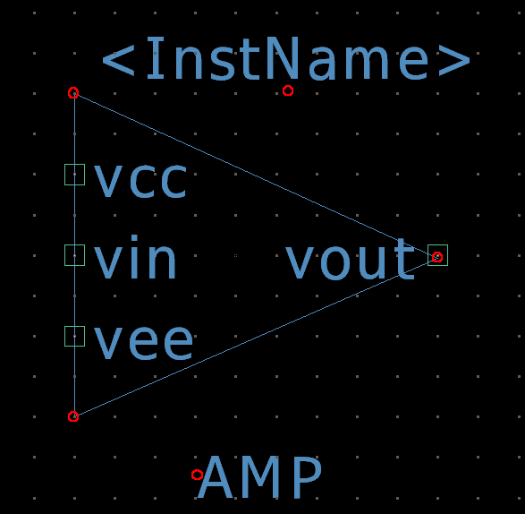

10. Advanced: Creating a Hierarchical Symbol from a Schematic
For complex circuit designs, it's often useful to create a hierarchical design, where a sub-circuit is represented by a single, clean symbol. This approach simplifies the main schematic, making it easier to read and manage. In this tutorial, we will take a simple circuit and turn it into a reusable symbol that can be placed in other schematics. We will use the inverting amplifier circuit we created earlier as an example.
10.1 Preparing Your Schematic for Symbol Creation
The first step is to define the "pins" or "ports" of your new symbol. These are the points where it will connect to other components.
- Open the Inverting Amplifier Schematic: Open your previously saved inverting amplifier circuit (e.g., inverting_amp.asc).
- Add Port Labels: Your symbol needs input and output ports.
- Go to Edit > Click Label Net (or press N).
- Add ports to the following nodes:
- The input voltage source wire: Name it Vin. Set the port type as Input.
- The output wire from the Op-Amp: Name it Vout. Set the port type as Output.
- The positive power supply: Name it Vcc. Set the port type as Input.
- The negative power supply: Name it Vee. Set the port type as Input.
- Place the Ports: Place these four port labels on the corresponding wires of your schematic. The label's position on the wire doesn't matter, but it's good practice to place them neatly.
10.2 Generating and Editing the New Symbol
With the ports defined, LTSpice can automatically generate a symbol for you. You'll then be able to customize its appearance.
- Generate the Symbol:
- Go to Hierarchy > Open or Generate This Sheet's Symbol.
- A new window will appear with the basic symbol, and the pins will be placed according to the port labels you created.
- Draw the Symbol's Body:
- Use the drawing tools at the top of the symbol editor window to create a shape that represents your circuit. For an amplifier, a triangle is a good choice.
- Use the Line tool to draw a triangle.
- Use the Circle tool to add a small circle at the inverting input if you like.
- Use the AMP tool to add "AMP" or other descriptive text inside the symbol.
- Position and Name the Pins:
- The ports you defined (Vin, Vout, Vcc, Vee) are represented by the small squares on the symbol.
- Select each pin and drag it to the desired position on your symbol body. For an inverting amplifier, you'd place Vin and Vout on the left and right, and Vcc and Vee on the top and bottom.
- You can also right-click on a pin to change its properties, such as its name or pin number.
- Save the Symbol:
- Go to File > Save As.
- LTSpice will automatically suggest saving it in the same directory as your schematic with a .asy extension. This is important, as it ensures LTSpice can find the symbol when you use it.
I have created the symbol like below, its up to you how do you want to modify the design of your symbol.
10.3 Using Your New Symbol in a Schematic
Now you can use your custom symbol just like any other component.
- New Schematic: Open a new blank schematic.
- Find Your Symbol:
- Go to Component (or press P).
- Navigate to the folder where you saved your schematic and symbol. You should see your new .asc file and its corresponding .asy symbol file.
- Select your symbol file (e.g., inverting_amp.asy) and click OK.
- Place and Connect:
- Place the symbol on the schematic. You can now wire up its pins (Vin, Vout, Vcc, Vee) as you would with any other component.
- When you run a simulation with this symbol, LTSpice will automatically look inside the symbol's underlying schematic to perform the calculations.
This process of creating a symbol from a schematic is called hierarchical design. It's an invaluable skill for keeping large and complex circuits organized and for creating reusable blocks of a design.